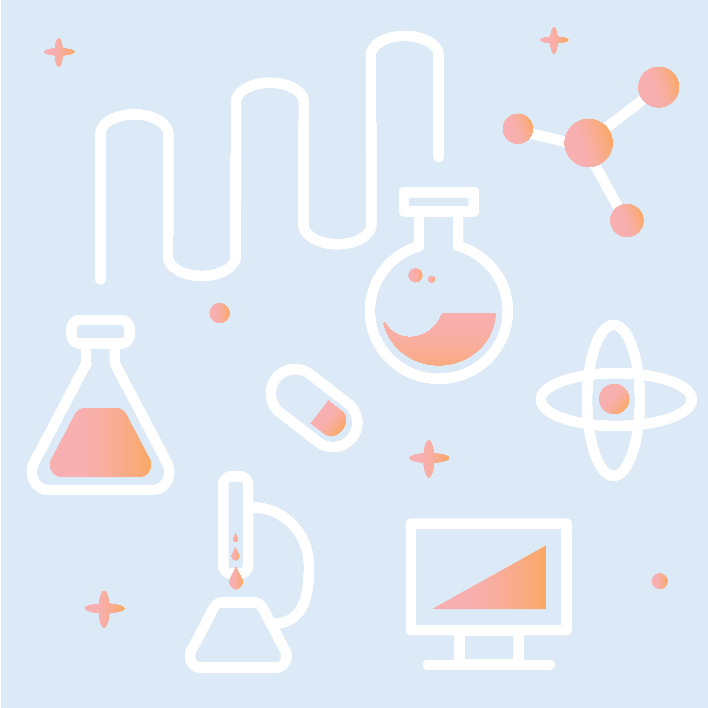
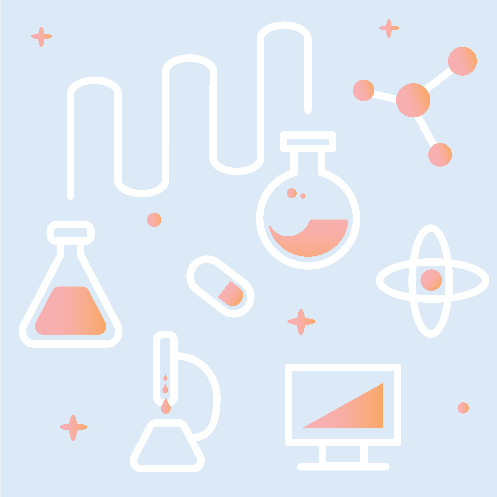

#the100dayproject
In an effort to improve my illustration skills, I decided to try my hand at #the100dayproject, an online campaign that encourages creatives to dedicate themselves to a craft for one hundred days. Currently, I am still working towards my 100th day! You can check out my progress here.
/ see the rest @jbaek100 /
Though I still have a ways to go, here are some things that I've learned:
1. If you can, spend one to two hours thinking about what you want to create. It takes a lot of thought to create illustrations directly from your imagination.
2. On the flip side, if you don't have time, remember that putting time constraints on yourself can also be beneficial. A good friend of mine once mentioned that your best, most creative work comes when you are most constrained.
3. I use reference images way too much, and I'm beginning to understand the divide between an expert designer from an amateur designer: the ability to imagine details and draw them from your and others' experiences.
4. Do this with a friend! I have the pleasure of embarking on the journey that is the #100dayproject with my good friend, Wendy Xue. It makes it easier to hold yourself accountable and provides a channel to receive honest, critical feedback. Check out Wendy's work here.